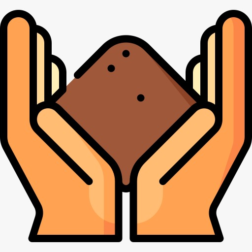

Cómo se hace una lombricomposta, paso a paso.

Paso 1
Se agrega materia orgánica desechos orgánicos cada día, se llena la caja hacia una dirección y se tapa con tierra; después de una semana se introducen las lombrices.
Paso 2
Se sigue añadiendo materia orgánica fresca, mientras las lombrices se reproducen y comen desechos ya medio podridos. Con eso vamos restaurando la tirra
Paso 3
Después de dos o tres meses se puede empezar a cosechar la tierra donde se empezó,La lombricomposta es un excelente mejorador de suelos
Respoambiental
Nosotros
Quienes
Que hacemos
Quienes
Que hacemos
Siguenos


Certificaciones